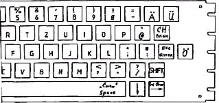

Nascom Journal |
Dezember 1981 · Ausgabe 11/12 |
Diese Spalte, die von nun an regelmäßig erscheint, soll Informationen über die Möglichkeiten, die Vor-und Nachteile von Nassys3 liefern.
Die Leser sind natürlich wieder aufgerufen, sich an der Sammlung von Material zu beteiligen und über Erfahrungen mit Nassys3 oder Anwendung von Unterprogrammen etc. zu berichten.
Eine Bitte: wenn Sie Modifikationen vornehmen, achten Sie darauf, daß sie für andere Anwender kompatibel bleiben. Ein Programm sollte mit jeder Nassys3 Version laufen können. Inzwischen sind schon Nassys5 und MJK-SYS aufgetaucht mir graut vor der Zeit, wenn wir für jeden Leser eine Anpassung eines Programmes an sein individuelles Betriebssystem liefern müssen.
Mit folgender Modifikation von Werner Öhring wird die Tastatur auf deutsche Norm umgestellt. Um sie voll auszunutzen, sollte man allerdings einen Character Generator mit deutschem Zeichensatz besitzen.
| Deutsch | ASCII | ||
| Ä | 5B | [ | CS=FF=Ctrl L |
| Ö | 5C | \ | LF=Ctrl J |
| Ü | 5D | ] | ß=Ctrl > |
| ↑ | 5E | ||
| Cursor | 5F | _ | L=Execute XXXX |
| ä | 7B | { | |
| ö | 7C | | | |
| ü | 7D | } | |
| ß | 7E | ¯ | |
| DEL | 7F | // | |
| § | 40 | @ |
Endlich kann man nun die Umlaute „shiften“, eine Möglichkeit, an die die angelsächsischen „Erfinder“ von Nassys 3 natürlich nicht gedacht haben.

| Engl. | Dtsch | ||
| 0130 | 5B | 5E | a wirkt nicht mehr als Control-Taste |
| 0148 | 06 | 0C | |
| 014C | A0 | 08 | @ → @ |
| 014D | 18 | C6 | shift+@ → |
| 014E | 06 | 20 | unabhängig von K0/K1 |
| 014F | CB | 18 | |
| 0150 | 6E | 04 | |
| 0151 | 28 | FF | frei |
| 0152 | 02 | FF | " |
| 0153 | EE | FF | " |
| 0154 | 40 | FF | " |
| 018A | 80 | E0 | schnellere Blinkfrequenz |
| 018B | 02 | 00 | |
| 018C | 50 | 38 | kürzere Wartezeit für Repeat-Automatik |
| 018E | D0 | 90 | |
| 018F | 01 | 00 | |
| 05C4 | 8E | FF | LF=CTRL+J |
| 05C6 | 88 | FF | FF=CTRL+L |
| 05D1 | 0E | 88 | CH=Shift+Backsp. |
| 0613 | 3D | 3C | =Y |
| 0614 | 3C | 3D | =Z QWERTZU Tastatur |
| 0616 | 9E | 0E | =Ö |
| 0619 | 96 | 94 | Cursor=shift-space |
| 0798 | 66 | XX | Sprung zu User-Progr. (z.B.Printer On etc.) mit Taste „L“ |
| 0799 | 03 | XX | |
von Michael Bach
Als ich kürzlich meinen Rechner auf den Nassys 3 Monitor umrüstete, mußte ich feststellen, daß er leider in einigen Punkten mit NAS-SYS 1 nicht kompatibel ist. Zur Beruhigung: Alle diese Probleme treten nur auf, wenn man in den normalen Monitorablauf eingegriffen hat. Mir ist bis jetzt folgendes aufgefallen:
1. (Noch harmlos): Wenn in der Titelzeile ein CR gedruckt wird, springt der Cursor nach Zeile 1. Dies ist zwar sinnvoll, aber halt anders als bei Nassys 1.
2. Wenn man das „R“-Kommando von Maschinen-Programmen aus aufruft, muß man die Variable „ARGN“ auf 0 setzen.
3.(Und dies ist ärgerlich): Wenn man die Tastatur-Tabelle verändert, ist die Variable „$KTAB“ im Gegensatz zu früher auf das Ende der neuen Tabelle zu setzen! Weiterhin sei noch darauf hingewiesen, daß beim Aufruf von Monitorbefehlen vom Programm aus die Parameter mal in „ARG1“ usw. und mal
| Seite 10 von 55 |
|---|